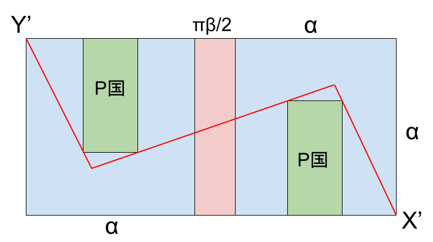

[x]でx以下で最大の整数を表すものとする。
p,qは0<q-p≤100を満たす素数である。pq=376289のとき,pの値を求めよ。
今後使うので[]を求めておく。条件から[]<
pqは6桁であるので,[]は3桁である。(∵105 ≦ pq < 106 から 102 < 102 ≦ < 103)
6002 < pq < 7002 より 600 < < 700
このあとは,今回は二分探索( 上限と下限の平均と比較する , 計算量
)で求めてみる。ただし,今回は手計算のため比較する対象は最も上限と下限の平均値に近い10の倍数や整数を選ぶとよい。
6502 = 422500 > pq
6202 = 384400 > pq
6102 = 372100 < pq
よって 610 < < 620
6152 = 378225 > pq
6132 = 375769 <pq
6142 = 376996 > pq
よって, 613< < 614
ゆえに, [] = 613
376289は平方数でない正の奇数であるため,n,mを正の整数として, と表される。条件から376289は2つの素数の積として表されるため,m-n≠1であるとき,n-m=p,n+m=qである。 よって,pの値を求めるにはn,mの値を求めればよい。
から,
・・・①
また, であるため,
から
両辺は正だから,
よって,
で,nが大きくなるとmも大きくなり,したがってq-pも大きくなるので,今回はq-pが比較的小さいことから,nを小さいほうから順に調べていく。
ここで, m2を12で割った余りは,0,1,4,9のいずれかであるため,①からを12で割った余りも0,1,4,9のいずれかである。
また,376289を12で割った余りは5であり,n2を12で割った余りは0,1,4,9のいずれかである。
よって,両辺を12で割った余りを比較したときに矛盾が生じないのは,n2を12で割った余りが9のときのみで,このとき,nを12で割った余りは,3,9のいずれかである。ゆえに,このときnを6で割った余りは3である。
よって, n > 613より, n = 615 , 621 , 627 , …を調べればよい。
n = 615のとき,
であるため,
よって,
ゆえに,n=615,m=44
したがって, p = n-m = 615-44 = 571
であり,p,qは素数でpq=376289を満たすためこれらは問題に適している。
また,n,mの値の組はただ1つであるため,これ以外にpの値として適するものは存在しない。
(答) p = 571
376289でない自然数でも,q-pが十分小さければこの方法は使える。
Integer君は,1から16までの整数の乱数がでる乱数生成器を開発した。ボタンを押すと1以上16以下の整数のうち,どの数も等確率で,1つを選んで出す。
この乱数生成器を2回使って,出た数を順にa,bとして,xy平面上に点P(a,b)をとった。このとき,原点をOとして,線分OP上に点O,P以外に格子点がない確率を求めよ。
線分OP上に点O,P以外に格子点がない ⇔ a,bが互いに素(最大公約数が1)
全事象の起こり方は162=256(通り)。
以下の3つの場合に分けて考える。
(i) a=bのとき
(ii) a>bのとき
(iii) a<bのとき
(a,b)=(1,1)の1通り。
b≧1からa≧2
bとしてありうる値の個数,すなわちa未満でaと互いに素である正の整数の個数は,a≧2のときa以下でaと互いに素である正の整数の個数と等しく,
であるとき,
(個)
であって,
であるとき,
(個)
であることを利用して,
※12は例外
| aの値 | bとしてありうる数の個数(個) |
|---|---|
| 2 | 1 |
| 3 | 2 |
| 4 | 2 |
| 5 | 4 |
| 6 | 2 |
| 7 | 6 |
| 8 | 4 |
| 9 | 6 |
| 10 | 4 |
| 11 | 10 |
| 12 | 4 |
| 13 | 12 |
| 14 | 6 |
| 15 | 8 |
| 16 | 8 |
| 計 | 79 |
よって,79通り
(ii)のa,bを入れ替えて考えると79通り。
(i)~(iii)からa,bが互いに素であるa,bの組み合わせは, 1+79+79=159(通り)。
よって,求める確率は
正の整数nに対して次の操作を行う。
<操作>
① 黒板にnを一つ書く。このとき,黒板に書かれている整数の個数は1つ増えるものとする。
② もしn=1ならば操作を終了する。
③ もしnが奇数ならばnを3n+1で置き換え,層でなければnをn/2で置き換える。新しいnも正の整数である。
④ ①に戻る
ただし,ここでいう黒板はただ一つ存在し,名言なしに書かれたり消されたりしない。また,操作を始めるときには黒板には何も書かれていない。
mを1以上100以下の整数とする。n=mとして操作を開始する。このとき操作は有限回数で終了することが保証されている。
操作が終了したとき,黒板に書かれている整数がすべて100以下であって,黒板に書かれている整数の個数が最大になるようなmの値をすべて求めよ。
<使い分け>
n・・・変数
m・・・初期値
まず,1≦m≦100を満たすmの100通りをすべて試せば終わるが,1つあたりにかかる時間は比較的長いので,推奨しない。
(nは2以上の整数)
とおく。
ここで,nの値が決まるとf(n)の値もただ一つに決まる。
また,任意の正の整数kについて,f(n)=kを満たすnは1つまたは2つであるため,
f(n)の値が決まるとnの値も1つまたは2つに決まる。
そのため, で始めて, を満たすを求めて, を満たすを求めて, ...という操作を繰り返す。
f(n)が奇数のとき,nは2f(n)のみである。
f(n)が偶数かつ3で割って1余るならばnは2f(n)との2つが考えられる。
上記のどちらにも当てはまらないとき,nは2f(n)のみである。
次の根のようなグラフをかくと操作回数がわかりやすい。(下にある数ほど操作回数が多い。) 途中で100を超える数が出たら,その先はかかなくてよい。
使用ツール: www.mermaidchart.com
(答) 66
一辺がαである立方体の世界がある(αは正の実数)。X国,Y国が図の位置にある。X国,Y国は点として考え,面積は考えない。
Dr. Long はX国からヘリコプターでY国へ行く。ヘリコプターの離着陸はX国では面A(図参照),Y国では面Bと垂直に行い,ヘリコプターは点として考え,大きさは考えない。ヘリコプターは離着陸を除いて常に上空β単位を飛行する。(すなわち,ヘリコプターが立方体の外部にあって,ヘリコプターと立方体の面上(辺を含む)との距離としてありうる最小値がβになるように飛行する。)(βは正の実数)
立方体の面Bを上にしたとき,ヘリコプターは面Bの上空,面Aの上空,及び面B,Aの斜め上の空間(見取り図の緑で塗られた部分,境界を含む)のみを飛行することができる。
(ここで,ヘリコプターがある領域の上空にあるとは,ヘリコプターから立方体のある面を含む平面に垂線をおろしたときにその領域と交わり,その交点とヘリコプターを結ぶ線分が立方体の他の面と交わらないことをい
う。)
また,ヘリコプターは離陸後,任意の向きを向いてから,着陸を始めるまで2回まで向きを変えることができる。ただし,ヘリコプターは曲面上も平面上と同様に向きを変えたとみなさずに進むことができる。
例えば、ヘリコプターは,円柱の底面の円の周上からある向きを向いたあと,一度も向きを変えずにもう一つの底面の円の周上に到達することができる。
また,通行可能な領域と通行不可能な領域の境界上は通行できるものとする。
以下の場合のそれぞれについて,ヘリコプターの離着陸を含まない移動距離としてありうる最小値
を求めよ。(必要に応じてα,βを用いること。ただし(2)はα, βいずれか一方のみ)
(1) ヘリコプターがP国の領域の上空を通ることができる場合。
(2) β=で,ヘリコプターがP国の領域の上空を通ることができない場合。
使用ツール: Geogebra (www.geogebra.org) など
P国の2つの領域はともに長辺が
,短辺が
の長方形
ここに示されていないP国の領域は存在しない
使用ツール: Geogebra など
上図で緑色に塗られているのは,図のように座標軸を設定した場合x座標,z座標がそれぞれX国の座標以上で,y座標がX国のy座標以上Y国のy座標以下である範囲と, x座標,z座標がそれぞれY国の座標以上で,y座標がX国のy座標以上Y国のy座標以下である範囲を合わせた範囲である。
見取り図
使用ツール: Geogebra など
展開図(上図のオレンジ色の部分)
使用ツール: Google Document
求める長さは,上の展開図の線分XYの長さで,
以下の図はすべて上の見取り図のオレンジ色の部分の展開図
使用ツール: Google Document
今回の問題の条件下ではこの経路が最短である。
証明
使用ツール: Google Document
3線分の交点は2つであるので,それらの点を直線AXに近いほうからM,Nとする。
線分MX,MYがP国の領域の長方形(辺上を含まない)を通らないためには,点Mは三角形XAX'の内部(辺上を含む)
にあって,同様に点Nは三角形YBY'の内部(辺上を含む)にある必要がある。
線分MNがP国の領域の長方形(辺上を含まない)を通らないので,点Mは四角形X'X''CAの内部(辺上を含む)内に,
点Mは四角形BDY''Y'の内部(辺上を含む)内に,ある必要がある。
また,このとき,3線分はP国の領域の長方形(辺上を含まない)を通らない。
また,このことから,ヘリコプターは2回向きを変える必要がある。
3線分の長さの和が最小となる点M,Nの位置について議論する。
四角形X'X''CAの内部(辺上を含む)に点E,
四角形DBY'Y''の内部(辺上を含む)に点E'を取り,
線分EE'と線分X'X'',線分EE'と線分Y'Y''の交点をそれぞれF,F'とすると,
FF'&leq'となるので,点M,Nはそれぞれ線分X'X''上,線分Y'Y''上にある。
ここで,線分FF',X''Y''の交点をGとすると,
三角不等式により,GX''≤X''F+FG(等号成立は点Fが点X''と一致するとき) , GY''≤Y''F'+F'G
(等号成立は点F'が点Y''と一致するとき)
よって,X''Y''=GX''+GY''≤X''F+FG+Y''F'+F'G=X''F+FF'+F'Y''
以上から点M,Nがそれぞれ点X'',点Y''上にあるとき,3線分の長さの和は最小になる。点X''は三角形XAX'の内部(辺上を含む)に,点Y''は三角形YBY'の内部(辺上を含む)にあるため条件を満たす。
この折れ線の長さを求めたい。
条件から
よって
使用ツール: Google Document
対称性より線分Bは上の図の全体の長方形の対角線の交点を通る。
上の図のように座標軸を導入して考えて,点Kの座標を求める。
線分Aを含む直線の方程式は,
線分Bを含む直線の方程式は,
点Kはこれらの交点であるため,方程式を連立して解くと,
(yは省略)
よって,点Kのx座標は
使用ツール: Google Document
上の図のように比を用いて斜辺の長さを求めると,
,
よって,求める長さは,